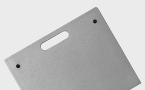
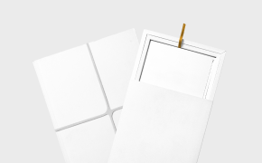

Простые вещи. Из бумаги
Бума́га (предположительно от итал. bombagia, первоисточником же считается иранский) — волокнистый материал с минеральными добавками. Каталог.png)
V.1
Результат вашего обучения 1.png)
V.2
Результат вашего обучения 1.png)
V.3
Результат вашего обучения
Максимальная белизна
Для повышения белизны, гладкости и мягкости в состав бумажной массы вводят белые минеральные вещества: мел, тальк, каолин и др. Эта операция называется наполнением. Отлив бумажного листа осуществляют на бумагоделательной машине, важнейшей частью которой является непрерывно движущаяся (как транспортер) металлическая или капроновая сетка.
Упаковка
Тираж: от 50 штук Сделано из крафт-бумаги или плотного картона. Упаковки имеют различные формы и расцветки, изготовим форму под заказ.Подробнее


Пакеты
Тираж: от 200 штук С прямоугольным дном. От 10 см до 60 см по высоте. Материалы: картон, крафт-бумага. Различные расцветки и дизайн.Подробнее

Кейсы
Тираж: от 30 штук Подойдет для документов и других бумаг. Различные расцветки, размеры и плотность. Материал: прессованная бумага.Подробнее

Другие изделия
Тираж: от 100 штук Нестандартные упаковки, кейсы и другие изделия различных размеров и конфигураций. Изготовим в кратчайшие сроки.Подробнее